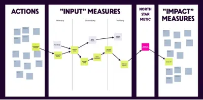
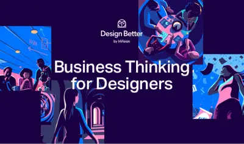
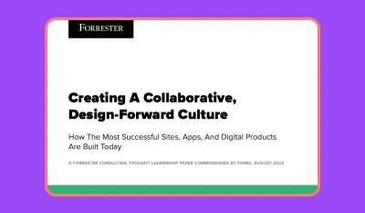
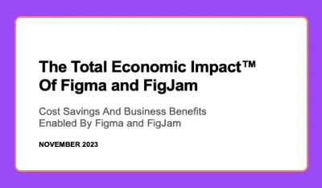
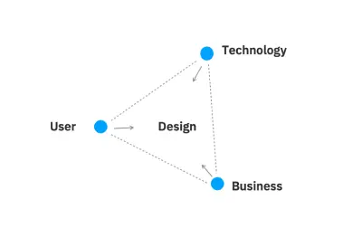

Be able to demonstrate the business value in the solutions
This page focuses on creating designs that align with business strategy.
Strategy Maps: Connecting Design to Business Objectives

Strategy Maps are powerful tools that can help bridge this gap by visualizing the relationships between different business goals and the role of design in achieving them.
PLAY: Rapidly Calculate and Recalculate Your Design Team Priorities
Tips for business focused design

A free book with tips for designers how how to have a business focussed mindset.
Creating a design-forward culture

Creating a design-forward culture
A Forrester report, commissioned by Figma in 2023 - documenting how the most successful sites, apps and digital products are being built.
The economic impact of Figma

The economic impact of Figma
If you find yourself having to justify the cost of Figma this is a helpful resource. A Forrester report commissioned by Figma in 2023. It details the total economic cost of Figma and FigJam. Showing the cost savings and business benefits provided by these services
Business Designers: Bringing User Focus to Business Needs

The business doesn’t care about design thinking. The business only cares about market outcomes Phil Gilbert, GM of IBM Design
Business designers connect the user focus of design thinking with the value focus of business.
Compromise Is Key When Design Influences Business Decisions
The End of Navel Gazing: Paul Adams, UX London 2018
Contentious and you might disagree - but should help focus us on where design sits within the priorities of an entire large organisation.